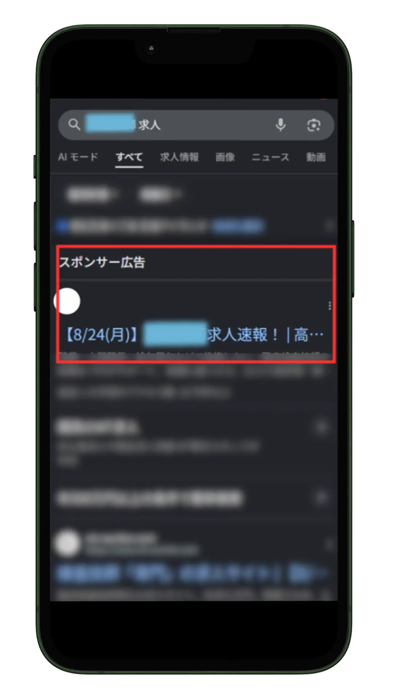

この記事でわかること
- 「Web広告」が指す媒体の全体像（リスティング・ディスプレイ・SNS・動画・アフィリエイト）
- Web広告運用代行の業務範囲6項目
- 依頼から広告配信開始までの標準的な流れ
- 自社の商材にあわせた媒体構成の決め方
- 依頼して陥りやすい失敗パターン
- 依頼前に確認すべきチェックリスト
「Web広告運用代行」とは、何を指すのか
「Web広告」とは、インターネット上に配信されるあらゆる広告手法の総称です。検索結果に表示されるリスティング広告、Webサイトの広告枠に表示されるディスプレイ広告、Instagram・X・LINEなどのSNS広告、YouTubeなどの動画広告、成果報酬型のアフィリエイト広告まで、幅広い手法が含まれます。「Web広告運用代行」という言葉は、こうした複数の媒体を横断して設計・運用できることを示す表現として使われます。
「リスティング広告運用代行」や「Meta広告運用代行」のように特定の媒体名を冠したサービス名と違い、「Web広告運用代行」を掲げる会社は、事業の特性に応じて複数媒体を組み合わせた設計を提案できることを強みにしていることが多いです。次の章で、それぞれの媒体の特徴を整理します。
対応する広告媒体の全体像
| 媒体タイプ | 代表例 | 特徴 |
|---|---|---|
| リスティング広告 | Google広告・Yahoo!広告 | 検索キーワードに連動して表示。顕在層に強い |
| ディスプレイ広告 | GDN・YDN | Webサイトの広告枠に画像・バナーで表示。潜在層への認知に強い |
| SNS広告 | Meta（Facebook・Instagram）・X・LINE・TikTok | 詳細なターゲティングが可能。ビジュアル訴求と相性が良い |
| 動画広告 | YouTube広告 | 商品・サービスの魅力を動きと音で伝えられる |
| アフィリエイト広告 | ASP経由の成果報酬型広告 | 成果が発生した時点で費用が発生する。初期投資リスクを抑えられる |
すべての媒体を同時に使う必要はありません。自社の商材、ターゲット層、予算にあわせて、どの媒体を組み合わせるかを設計するのが、Web広告運用代行会社の役割の一つです。
業務範囲6項目
Web広告運用代行がカバーする業務は、おおむね次の6項目に整理できます。
戦略設計・媒体選定
事業内容・ターゲット・予算をもとに、どの媒体をどの配分で使うかを設計します。
アカウント設計・入稿
キーワードやオーディエンスの設計、広告文・クリエイティブの入稿、計測タグの設置を行います。
日々の運用・入札調整
配信状況を見ながら、入札額・除外設定・配信面の調整を継続的に行います。
クリエイティブの検証・差し替え
複数の広告文・バナー・動画を用意し、反応の良いものへ入れ替えるテストを繰り返します。
効果測定・レポーティング
GA4等での成果測定と、月次または週次でのレポート作成・報告を行います。
LP・受け皿の改善提案
広告経由の反応が悪い場合、配信面だけでなくLPやフォームの改善提案まで含めて対応する会社もあります。用意していない会社もあるため、契約前の確認が必要です。

依頼から運用開始までの流れ
ヒアリング・媒体提案（1〜2週間）
事業内容・ターゲット・予算・KPIをヒアリングし、優先すべき媒体構成を提案します。
アカウント設計・審査（1〜2週間）
キーワード・オーディエンス設計、広告文・クリエイティブの準備、計測タグの設置を行い、媒体側の審査を経て配信準備を整えます。
配信開始・初期調整（1か月目）
配信を開始し、初期の反応を見ながら入札やターゲティングを調整します。この段階でのデータが、その後の改善の土台になります。
継続改善（2か月目以降）
月次レポートをもとに、クリエイティブの差し替えや媒体配分の見直しを継続します。
契約から実際の配信開始までは、媒体数やアカウントの新規開設有無によって異なりますが、2〜4週間程度が目安です。すでに稼働中のアカウントを引き継ぐ場合は、これより短い期間で開始できることもあります。
媒体構成の決め方
媒体構成は、次の3つの軸で考えると整理しやすくなります。
- 検索意図が明確な商材か：すでに欲しいものが決まっている見込み客が多いなら、リスティング広告から始めるのが定石です
- ビジュアルで魅力が伝わる商材か：写真や動画で価値が伝わりやすい商材は、SNS広告や動画広告との相性が良い傾向があります
- 認知が先に必要か、比較検討層を狙うか：認知拡大が目的ならディスプレイ広告・動画広告、比較検討層の刈り取りならリスティング広告が向いています
複数媒体を同時に始めるより、まず1媒体で運用を安定させてから広げるほうが、成果の要因を切り分けやすくなります。同時に始めると、成果が出た場合もどの施策が効いたのか判断しづらくなることがあります。
陥りやすい失敗パターン
| パターン | 何が起きるか | 事前に防ぐ質問 |
|---|---|---|
| 受け皿となるLPが整っていない | 広告費を投じても、成果につながらない | 「配信前にLPの内容を確認してもらえますか」 |
| 媒体を広げすぎて工数が分散する | 1媒体あたりの改善スピードが落ちる | 「まず何媒体から始めるのが適切ですか」 |
| 計測環境が整わないまま配信を始める | 成果が出ているかどうか判断できない | 「計測タグの設置は配信開始前に完了しますか」 |
| アカウントの名義を確認していない | 解約時にデータや運用履歴を引き継げない | 「アカウントは自社名義になりますか」 |
依頼前チェックリスト
Web広告運用代行を依頼する前のチェックリスト
【媒体・範囲】
- 対応可能な媒体の一覧を確認した
- まず何媒体から始めるべきか、提案を受けた
- LP改善の提案が範囲に含まれるか確認した
【進め方】
- 配信開始までの標準的な期間を確認した
- 計測タグの設置が配信開始前に完了するか確認した
【契約・資産】
- 広告アカウントの名義（自社／代理店）を確認した
- 最低契約期間と、途中解約時の扱いを確認した
なお、契約書の条項そのものの解釈、とくに途中解約時の扱いやアカウントの帰属に関する個別の判断については、弁護士等の専門家にご確認ください。
LnXの見解
「Web広告運用代行」で相談を受けるとき、最初に確認しているのは「どの媒体を使うか」ではなく「誰に何を届けたいか」です。媒体はあくまで手段であり、ターゲットと商材の特性が決まっていないまま媒体だけ決めても、配信設計の精度は上がりません。
LnXでは、Google・Yahoo・Meta・X・LINE・TikTok・YouTube・GDN・YDNと、主要な媒体を横断して対応しており、1媒体だけの依頼でも、複数媒体をまたいだ予算配分の設計でも相談いただけます。運用手数料は広告出稿金額の20%（50万円未満は10万円／税込）、最低契約期間は6か月です。まずは事業内容とターゲットをうかがい、どの媒体から始めるべきかを一緒に整理するところからご相談いただけます。ご相談は無料で、その場で契約はお願いしていません。
よくある質問
Q「Web広告」と「リスティング広告」は何が違いますか？
「Web広告」は、検索連動型（リスティング）・ディスプレイ・SNS・動画・アフィリエイトなど、インターネット上のあらゆる広告手法を含む総称です。リスティング広告はそのうちの一種で、検索結果に表示されるテキスト広告を指します。「Web広告運用代行」という場合は、通常これら複数の媒体を横断して対応できることを意味します。
Qすべての媒体に対応してもらう必要がありますか？
必要ありません。自社の商材やターゲットに合う媒体から始め、成果を見ながら広げるのが一般的な進め方です。多くの運用代行会社は、初回の打ち合わせで事業内容とターゲットをヒアリングしたうえで、優先すべき媒体を提案します。
Q契約から広告が配信されるまでどのくらいかかりますか？
媒体数やアカウントの新規開設有無によって異なりますが、ヒアリングからアカウント設計、審査を経て配信開始までは2〜4週間程度が目安です。すでに稼働中のアカウントを引き継ぐ場合は、より短い期間で開始できることもあります。
QLPが無くても広告は出せますか？
技術的には可能ですが、受け皿となるLPが整っていないと広告費を投じても成果につながりにくくなります。多くの運用代行会社が、広告開始前にLPの有無や訴求内容を確認するのはこのためです。LPが無い場合は、先にLP制作を含めて依頼するか、簡易的な受け皿ページから始める進め方があります。
Q複数の媒体を同時に始めるのと、1媒体から始めるのはどちらがよいですか？
予算や体制にもよりますが、まず1媒体で運用を安定させてから広げるほうが、成果の要因を切り分けやすく、失敗した場合の原因究明もしやすくなります。複数媒体を同時に始めると、成果が出た場合もどの施策が効いたのか判断しづらくなることがあります。
Q広告アカウントは自社と代理店のどちらの名義になりますか？
会社によって異なります。自社名義で開設し代理店に運用権限を付与する形と、代理店名義のアカウントで運用する形があります。解約時にデータや運用履歴を引き継げるかが変わるため、契約前にどちらの形式かを確認しておくことをおすすめします。